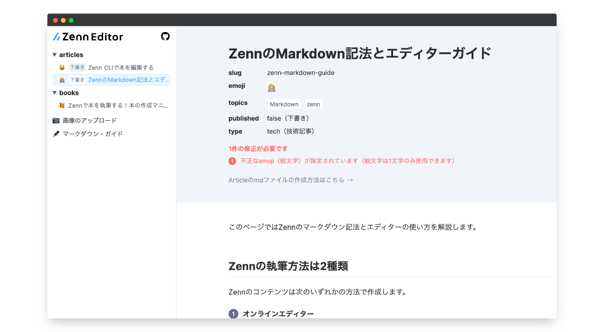
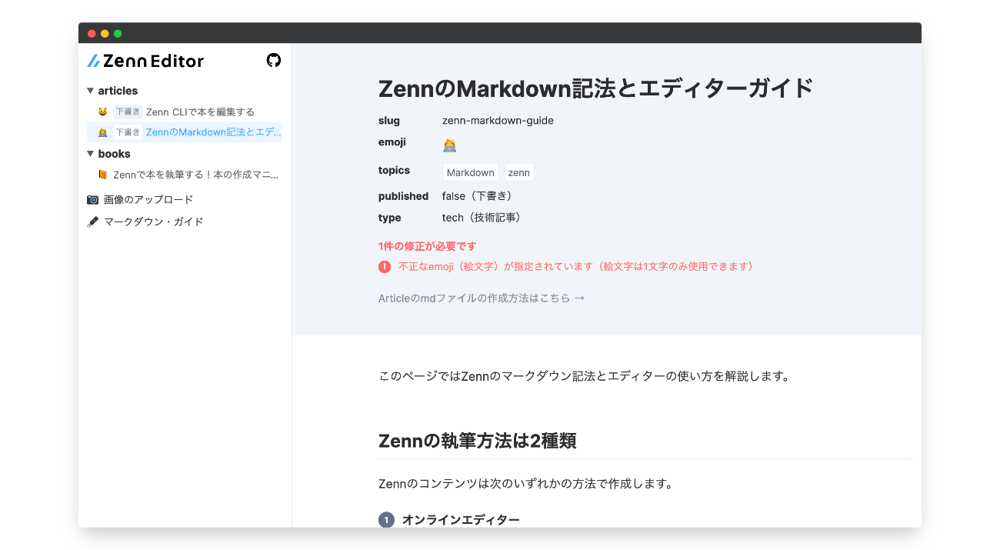

📝
Zennの2種類の執筆方法について
2020/09/06に公開 2021/09/09
85
ツイート
Zenn
Idea
このページではZennで記事や本を作成するときの執筆環境について紹介します。
Zenn の執筆方法は 2 種類
Zennのコンテンツは次のいずれかの方法で作成します。
1. Webエディター

ブラウザ上で動くエディターです。Zennにログインした状態で使用します。
▶︎ ショートカットを使用しよう
2. ローカルのテキストエディター + CLI
 

自分の好きな環境で執筆したい方はGitHub リポジトリとの連携機能を利用することをおすすめします。リポジトリ連携をすると、特定のブランチに変更があったときに自動でコンテンツがzenn.devに反映されるようになります。
リポジトリ連携時には、ローカルでmarkdownファイルを作成し、好きなテキストエディターで編集を行います。Zenn CLIを使うことでブラウザでプレビューしながら執筆することが可能になります。
オンラインエディターを使う場合も、CLIを使う場合もmarkdownの書き方は変わりません。具体的な記法は下記のリンク先をご覧ください。
GitHubで編集を提案
85
ツイート
Zenn公式
Zennの使い方や開発状況を発信する公式アカウントです。
フォロー
Discussion

ログインするとコメントできます
Login
Zenn公式
フォロー
Zennの使い方や開発状況を発信する公式アカウントです。
Read next

新しい技術を学習しながらNotionでメモをとり、Zennで効率よく記事化するフロー

Keita Mori (ふぉれ) in PY
2020/10/28
356

僕がZennを選んだ理由
daichi_gamedev
2021/04/27
212

ZennのアイコンをSimple Iconsに登録して、OSSってやっぱり良いなと思った話

nekocodeX
2020/12/17
121

有料記事の技術ライターで食っていけるか

mizchi
2020/09/22
205

Zenn の執筆を支援する VSCode 拡張 Zenn Editor

negokaz
2021/04/29
228

【エンジニア必須】何でも文書化のススメ
harrythecode
2022/10/29
52

Zennで本を作ってみた感想と本作りで得た知見

PADAone🐕
2022/07/05
47

Zenn& Hugo in Obsidian : OHZフローによるナレッジベースとアウトプットコンテンツの完全統括
PADAone🐕
2020/12/07
84

Zenn の Publication 機能を申請してみた。


mattn in vim-jp
2020/09/20
47

zenn で有料記事を作ってみた感想
mizchi
2020/09/20
41